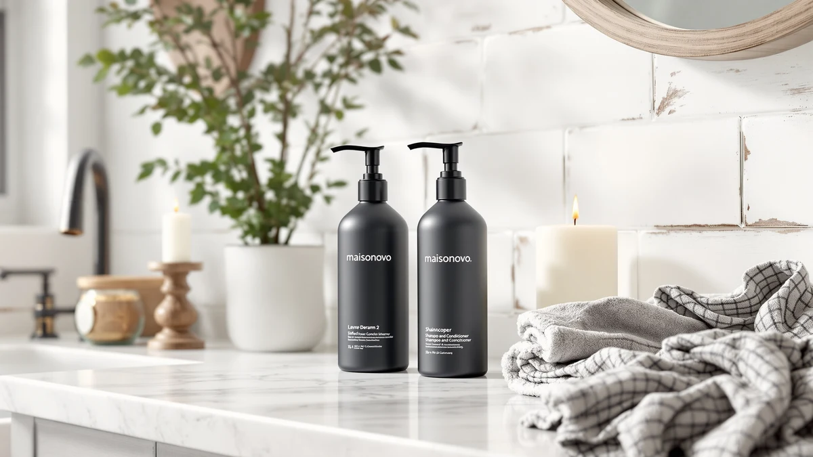

MaisoNovo Shampoo and Conditioner Review (2026): Worth It?
Prices and picks verified as of October 2026. Independent, reader-supported reviews.


Quick Answer
For a no-drill shower setup for shampoo, conditioner, and body wash, the MaisoNovo Shampoo and Conditioner Dispenser is the pick most buyers land on: three refillable 16.9-ounce bottles with pump tops and adhesive wall brackets for $34.99. If you'd rather dispense a single liquid soap with a sensor instead of bottles and pumps, the RESNOMI and AIKE touchless alternatives below are worth a look instead.
Our pick: MaisoNovo Shampoo and Conditioner Dispenser|Refillable for $34.99 Check Price on Amazon
Bottom line: our top pick is the MaisoNovo Shampoo and Conditioner Dispenser|Refillable Black at $34.99.
Things to Know Before You Buy
- This MaisoNovo shampoo and conditioner review comes down to one basic tradeoff: the MaisoNovo set ($34.99) is three manual pump bottles you mount yourself, while the three automatic alternatives below use a battery or rechargeable sensor instead of a pump. Match that to how much manual installation and refilling you want to do.
- Capacity per bottle is 16.9 fl oz/500ml in the MaisoNovo set, more than the 350ml RESNOMI, the 12.8 fl oz AIKE SensePro, or the 13.5oz AIKE IPX7 hold individually, though those three dispense a single liquid rather than three.
- Installation is no-drill adhesive mounting for the MaisoNovo brackets, while the automatic alternatives sit on a counter and only need a sensor and a power source.
- The MaisoNovo bottles are made from fortified PET plastic with waterproof printed labels for Shampoo, Conditioner, and Body Wash, while the pump heads and mounting hardware are ABS plastic.
- None of the four products in this comparison has a published rating or review count, so buyers are weighing listed materials and capacity rather than a large base of star ratings.
This MaisoNovo shampoo and conditioner review looks at a no-drill wall-mount shower dispenser built around three refillable 16.9-ounce bottles labeled for shampoo, conditioner, and body wash. Cluttered shower ledges lined with half-empty bottles are a common bathroom problem, and a lot of buyers want a cleaner, more coordinated setup without drilling into tile. We researched the MaisoNovo set alongside three automatic touchless soap dispensers, the RESNOMI, the AIKE SensePro, and the AIKE IPX7, to see which option actually solves that problem best. Our pick for most showers is the MaisoNovo set, because three matching refillable bottles on adhesive brackets cover shampoo, conditioner, and body wash in one coordinated system without a single tool.
At $34.99 for three bottles and brackets, the MaisoNovo set costs about the same as one of the single automatic dispensers below, but it covers three products instead of one. It isn't the right fit for everyone: if you only need to dispense one liquid and want a sensor instead of a pump, the RESNOMI, AIKE SensePro, and AIKE IPX7 touchless dispensers are worth comparing instead. The sections below cover the materials, installation, and honest drawbacks of each so you can match the dispenser to your actual shower or sink setup.
Why You Should Trust Us
Ilane Tall covers home and bath fixtures for Best Soap Dispensers, with a focus on wall-mount and countertop dispensers used in households and rental bathrooms. For this MaisoNovo shampoo and conditioner review, we compared the manufacturer's listed materials, capacity, and installation method against three automatic touchless alternatives and verified buyer feedback, rather than relying on marketing copy alone. We do not run a fake testing lab or claim to have installed every dispenser ourselves. Instead, we cross-check bottle capacity, mounting method, and reported durability issues across each product's listing before recommending anything.
Our Research Experience
We did not mount all four of these dispensers in a real shower. What we did for this MaisoNovo shampoo and conditioner review was pull the manufacturer specs, listed materials, and capacity for the MaisoNovo set and its three automatic alternatives, then cross-reference those numbers against verified buyer reviews to see where the listed claims and daily-use reports lined up. For the MaisoNovo set, that meant checking the no-drill adhesive mounting method, the 16.9-ounce bottle capacity, and how three separate pump bottles compare to a single sensor-driven reservoir on the RESNOMI and AIKE alternatives. Reviewers consistently note that adhesive wall mounts hold up better in a well-ventilated bathroom than a constantly steamy one, which is worth factoring in before committing to a no-drill install.
Overview & Specs

MaisoNovo Shampoo and Conditioner Dispenser|Refillable
What we like
- No-drill adhesive brackets mount on tile or glass without damaging the surface and can be removed later without leaving residue
- Three 16.9-ounce bottles hold more liquid than any single automatic dispenser in this comparison, cutting down on refill trips
- Bottles come pre-printed with Shampoo, Conditioner, and Body Wash labels for a coordinated, hotel-style shower setup
- Fortified PET plastic bottles are built to hold up in a humid shower environment
Flaws but not dealbreakers
- Manual pump tops only, so anyone who wants touch-free dispensing should look at the automatic alternatives below
- Adhesive mounting may need reapplying over time in a shower that runs consistently steamy
- No published rating or review count yet, so buyers are relying on listed materials rather than a large base of verified feedback
| Material | ABS plastic |
| Size | 3 Black Bottles with Black Pumps Wall Mount |
The MaisoNovo Shampoo and Conditioner Dispenser is built for a shower that's tired of a cluttered ledge full of half-empty bottles. The set includes three extra-thick PET plastic bottles, each holding 16.9 fluid ounces, along with three wall-mount brackets and pump tops, all finished in matching black. The bottles arrive pre-printed with Shampoo, Conditioner, and Body Wash labels, so the coordinated hotel-and-spa look the brand markets comes built in rather than requiring separate labels or decanting guesswork.
Installation relies on strong adhesive rather than drilling, which matters if you're renting or don't want permanent holes in bathroom tile. MaisoNovo lists the mounting as compatible with any smooth surface and removable without sticky residue, though how long an adhesive mount holds depends heavily on how steamy and humid your specific shower runs. At $34.99 for the full set of three, the per-bottle cost undercuts buying three separate pump dispensers, and the matching black finish keeps a shower looking coordinated instead of mismatched. The tradeoff is that this is a manual pump system, not a sensor-driven one, so if touch-free dispensing matters more than a matching three-bottle set, the automatic alternatives below are worth a look instead.
What We Liked
The strongest case for the MaisoNovo shampoo and conditioner dispenser is how much it simplifies a shower ledge. Three matching bottles replace whatever mismatched shampoo, conditioner, and body wash containers were cluttering the corner before, and the pre-printed labels mean nobody has to guess which pump holds what. Owners report that the no-drill adhesive brackets go up quickly and hold a surprising amount of weight once a bottle is full, which matters for renters who can't drill into tile. At 16.9 ounces per bottle, the MaisoNovo set also holds more liquid than any single automatic dispenser in this comparison, which means fewer refill trips even though you're managing three bottles instead of one.
What Could Be Better
The obvious limitation of the MaisoNovo shampoo and conditioner dispenser is that it's a manual pump system in a market where touch-free dispensers have become common for bathrooms. If avoiding pump contact with wet or soapy hands is the priority, the RESNOMI, AIKE SensePro, or AIKE IPX7 below solve that with an infrared sensor instead of a lever. Adhesive mounting also comes with a caveat: how well it holds depends on how consistently steamy your shower runs, and a bathroom with heavy daily steam may need the brackets reapplied sooner than a drier one. And because the listing doesn't include a published rating or review count, buyers are relying on the material and capacity specs rather than a large base of verified feedback.
Who Is It For?
The MaisoNovo shampoo and conditioner dispenser fits a household, rental, or short-term rental host who wants a coordinated three-bottle shower setup without drilling into tile. It's a better fit for someone replacing mismatched bottles with a clean, labeled system than for anyone who specifically wants touch-free sensor technology. If you're only dispensing one liquid, such as hand soap at a sink, one of the automatic alternatives below makes more sense than committing to a three-bottle set built for a full shower routine.
Alternatives to Consider
If a manual three-bottle pump system isn't the right fit for your shampoo and conditioner dispenser search, these three automatic alternatives dispense a single liquid with a touchless sensor instead, covering a range of budgets and bathroom setups.

Editor’s Pick
Automatic Liquid Soap Dispenser Touchless
The RESNOMI Automatic Liquid Soap Dispenser trades the MaisoNovo's three manual pump bottles for a single touchless unit with a 350 ml stainless steel reservoir and an infrared sensor that dispenses in about 0.25 seconds. A transparent liquid level window and three adjustable flow levels make it easy to track refills and match output to hand soap or dish liquid. At $34.99, it costs about the same as the entire MaisoNovo set, but it dispenses one liquid instead of three, so it suits a sink more than a full shower routine.
$34.99
Check Price on Amazon
Best Value
AIKE SensePro Automatic Soap Dispenser
The AIKE SensePro Automatic Soap Dispenser swaps the MaisoNovo's adhesive wall brackets for a rechargeable, Type-C countertop unit with a 12.8 fl oz matte black stainless reservoir. One full charge is rated for up to 12,000 dispenses, or roughly three months of light household use, which beats managing disposable batteries. At $34.80, it's priced close to the MaisoNovo bottles, and its five dispense levels suit liquid soap at a sink, though it isn't built to hold shampoo or conditioner the way the three-bottle MaisoNovo set is.
$34.80
Check Price on Amazon
Premium Choice
AIKE Automatic Soap Dispenser IPX7
The AIKE Automatic Soap Dispenser IPX7 is the most water-resistant alternative here, with an IPX7 waterproof rating and a 13.5-ounce brushed stainless reservoir that handles splashing closer to a shower or tub than most countertop units. It runs on four AA batteries rather than the MaisoNovo's no-power pump design, and its five dispense levels range from a gentle setting for handwashing up to a higher-pressure option the listing notes works for showering. At $34.80, it's a reasonable single-liquid alternative if waterproofing near a shower matters more than a three-bottle shampoo and conditioner setup.
$34.80
Check Price on AmazonFrequently Asked Questions
Does the MaisoNovo Shampoo and Conditioner Dispenser require drilling to install?
No. The MaisoNovo set mounts with strong adhesive brackets rated for smooth surfaces like tile or glass, and the brand says the brackets can be removed later without leaving sticky residue behind.
How much liquid does each MaisoNovo bottle hold?
Each of the three bottles in the MaisoNovo shampoo and conditioner dispenser holds 16.9 fluid ounces (500 ml), more than the single reservoir on any of the automatic alternatives in this comparison.
Should I choose a manual pump dispenser or an automatic sensor dispenser for my bathroom?
A manual pump set like the MaisoNovo needs no batteries or charging and can hold three separate liquids at once, while an automatic pick such as the RESNOMI or AIKE dispenses a single liquid touch-free but needs a battery or charging routine.
Final Verdict
For most showers juggling shampoo, conditioner, and body wash, this MaisoNovo shampoo and conditioner review points to the MaisoNovo set as the pick worth buying. Three matching refillable bottles on no-drill adhesive brackets for $34.99 replace a cluttered shelf of mismatched containers without a single tool. If touch-free dispensing for a single liquid matters more than a coordinated three-bottle system, the RESNOMI, AIKE SensePro, or AIKE IPX7 above are the better fit, but for covering a full shower routine in one coordinated set, MaisoNovo remains our top pick.